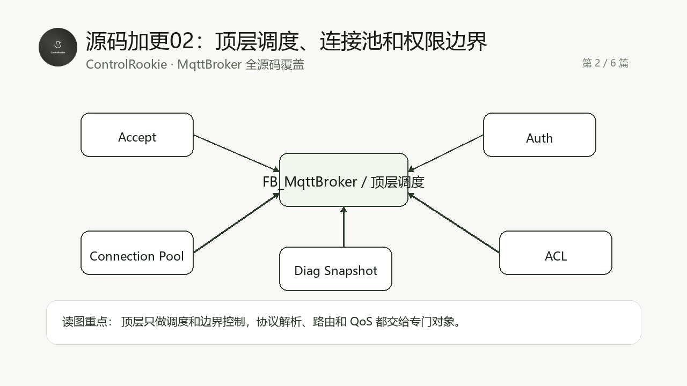

这一组源码加更只有一个目标：把 MqttBroker 的真实 ST 源码按工程阅读顺序讲完整。不是再补几段“看起来像源码”的片段，而是让读者能沿着源码对象理解这个 Broker 怎么组织、怎么运行、怎么排障。
适合谁收藏
- 已经读过 MqttBroker 主线教程，想继续看真实源码实现的工程师。
- 想学习 CodeSys ST 工程如何拆分 Broker、连接池、编解码、路由和 QoS 调度的人。
- 想把 MQTT Broker 移植到 PLC、边缘控制器或教学工程里的开发者。

先给结论
这一篇看 FB_MqttBroker 顶层如何只做调度：接收新连接、驱动连接槽位、处理业务事件、检查权限、更新诊断和快照。真正的协议解析和路由不应该堆在顶层。
Broker 顶层最容易写成一个巨大的 CASE，然后监听、连接、认证、ACL、路由、诊断全部塞在一起。这样能跑，但很难稳定维护。
这篇覆盖 12 个源码文件，合计约 906 行 ST 代码。为了保持公开教程可读性，正文先讲源码阅读路径，再给完整源码。读代码时建议不要从第一个代码块一路机械读到底，而是按本篇的“读代码顺序”来抓主线。
从工程问题到代码职责
| 层次 | 本篇重点 | 你读源码时要抓住的判断 |
|---|---|---|
| 工程入口 | 程序如何启动、对象如何被实例化 | 先确认谁是入口，谁只是被调度的对象 |
| 数据边界 | 容量、状态、错误、缓冲区和表结构 | 先知道边界，后面排障才不会乱猜 |
| 协作关系 | 各 FB、函数和结构体如何互相传递数据 | 不按文件夹读，按数据流和状态流读 |
| 验证路径 | 在线观察应该看哪些变量 | 代码最终要能落到现场排障，而不是只停在源码阅读 |
本篇源码覆盖表
| 序号 | 源码对象 | 行数 |
|---|---|---|
| 1 | FB_MqttBroker.M_AcceptNewConnection.st | 91 |
| 2 | FB_MqttBroker.M_CheckAuth.st | 34 |
| 3 | FB_MqttBroker.M_CheckPublishAcl.st | 41 |
| 4 | FB_MqttBroker.M_CheckSubscribeAcl.st | 45 |
| 5 | FB_MqttBroker.M_ClearDiag.st | 27 |
| 6 | FB_MqttBroker.M_ClearMetrics.st | 40 |
| 7 | FB_MqttBroker.M_HandleDuplicateClientId.st | 44 |
| 8 | FB_MqttBroker.M_KickClient.st | 34 |
| 9 | FB_MqttBroker.M_LogDiag.st | 36 |
| 10 | FB_MqttBroker.M_ServiceConnections.st | 198 |
| 11 | FB_MqttBroker.M_UpdateSnapshots.st | 62 |
| 12 | FB_MqttBroker.st | 254 |
推荐阅读顺序
- 先看
FB_MqttBroker.st的输入输出和主调度。 - 再看连接接入、重复 ClientId、KickClient。
- 最后看认证、ACL、诊断和快照方法如何服务现场运维。
验证和排障边界
- 多个客户端同时连接时，观察连接池是否稳定复用槽位。
- 用户名、密码或 ACL 异常时，确认错误停在权限边界，而不是污染路由和编解码逻辑。
本篇完整开源代码
下面代码来自对应 .st 源文件的连续完整内容。为方便公开阅读，只保留源码对象名，不放本机工程路径。
完整代码 01: FB_MqttBroker.M_AcceptNewConnection.st
iecst
/// =======================================================================
/// 名称 : M_AcceptNewConnection
/// 功能 : 接受一个新的 TCP 客户端连接
/// 说明 : 每扫描周期最多分配一个新连接，避免大量接入瞬间拖长 PLC 扫描周期。
/// 编程人员 : ControlRookie
/// 时间 : 2026-05-08
/// 版本 : V1.0
/// =======================================================================
{attribute 'hide_all_locals'}
METHOD M_AcceptNewConnection : BOOL
VAR
uiIndex : UINT; // 连接槽位扫描索引[1..cnMaxClientSlots]
END_VAR
// === IMPLEMENTATION ===
uiFreeSlot := 0;
uiUsedSlotCount := 0;
xTcpAcceptActive := FALSE;
xTcpAcceptError := FALSE;
// 每个客户端槽位必须独立调用自己的 NBS.TCP_Connection。
// 之前如果多个槽位复用一个 TCP_Connection 实例，hConnection 会被后续接入覆盖，
// 连接槽位中的 TCP_Read 就可能读到已经失效或不属于自己的句柄，现场表现为客户端连接瞬间掉线。
FOR uiIndex := 1 TO GVL_MqttBroker.cnMaxClientSlots DO
IF aConnections[uiIndex].xActive THEN
// 已占用槽位继续保持对应 TCP_Connection 运行，用它的 xActive 作为该槽位连接是否仍有效的唯一依据。
uiUsedSlotCount := uiUsedSlotCount + 1;
aTcpAccept[uiIndex](xEnable := TRUE, hServer := hServer);
ELSE
IF uiFreeSlot = 0 THEN
// 本周期只开放第一个空闲槽位接收新连接，控制 PLC 单周期接入工作量。
uiFreeSlot := uiIndex;
aTcpAccept[uiIndex](xEnable := TRUE, hServer := hServer);
ELSE
// 其他空闲槽位禁用，避免同一扫描周期多个空槽同时竞争同一个新连接。
aTcpAccept[uiIndex](xEnable := FALSE, hServer := hServer);
END_IF
END_IF
IF aTcpAccept[uiIndex].xActive THEN
xTcpAcceptActive := TRUE;
END_IF
IF aTcpAccept[uiIndex].xError THEN
xTcpAcceptError := TRUE;
eTcpAcceptErrorID := aTcpAccept[uiIndex].eError;
END_IF
END_FOR
uiAcceptFreeSlot := uiFreeSlot;
uiActiveSlotCount := uiUsedSlotCount;
IF xTcpAcceptError THEN
eLastError := E_MqttBrokerError.uiTcpAcceptFailed;
xError := TRUE;
stMetrics.udiRejectedConnections := stMetrics.udiRejectedConnections + 1;
M_AcceptNewConnection := FALSE;
RETURN;
END_IF
IF uiFreeSlot <> 0 THEN
hNewConnection := aTcpAccept[uiFreeSlot].hConnection;
IF (hNewConnection <> 0)
AND aTcpAccept[uiFreeSlot].xActive
AND (hNewConnection <> hLastDispatchedConnection) THEN
hLastAcceptHandle := hNewConnection;
// 新连接只交给 uiFreeSlot 对应的连接 FB。
// xConnectionActiveIn 必须来自同一个槽位的 aTcpAccept[uiFreeSlot].xActive，
// 不能用全局 xTcpAcceptActive，否则会让某个槽位误读其他槽位的 TCP 状态。
// NBS.TCP_Connection 的 hConnection 在部分运行时会短暂保留上一拍句柄。
// 如果不排除 hLastDispatchedConnection，空闲槽位可能反复接收同一个旧句柄，
// 在线表现就是 xTcpAcceptActive、uiAcceptFreeSlot、uiActiveSlotCount 不断闪烁，
// 而连接槽位始终读不到 CONNECT 首包。
aConnections[uiFreeSlot](
bEnable := TRUE,
uiSlot := uiFreeSlot,
hConnectionIn := hNewConnection,
xConnectionActiveIn := aTcpAccept[uiFreeSlot].xActive,
udiNowMs := udiNowMs,
stConnection => aConnectionStates[uiFreeSlot]);
hLastDispatchedConnection := hNewConnection;
uiActiveSlotCount := uiUsedSlotCount + 1;
stMetrics.udiAcceptedConnections := stMetrics.udiAcceptedConnections + 1;
M_LogDiag(uiSlot := uiFreeSlot, eError := E_MqttBrokerError.uiNoError, sMessage := 'TCP client accepted');
END_IF
ELSE
hNewConnection := 0;
END_IF
M_AcceptNewConnection := TRUE;完整代码 02: FB_MqttBroker.M_CheckAuth.st
iecst
/// =======================================================================
/// 名称 : M_CheckAuth
/// 功能 : 校验 MQTT CONNECT 用户名和密码
/// 说明 : 未启用认证时直接放行；启用后使用固定小表匹配，适合工业内网轻量部署。
/// 编程人员 : ControlRookie
/// 时间 : 2026-05-08
/// 版本 : V1.0
/// =======================================================================
{attribute 'hide_all_locals'}
METHOD M_CheckAuth : BOOL
VAR_INPUT
sUsername : STRING; // CONNECT 中解析出的用户名
sPassword : STRING; // CONNECT 中解析出的密码
END_VAR
VAR
uiIndex : UINT; // 固定用户表扫描索引[1..cnMaxAuthUsers]
END_VAR
// === IMPLEMENTATION ===
IF NOT xAuthEnable THEN
M_CheckAuth := TRUE;
RETURN;
END_IF
FOR uiIndex := 1 TO GVL_MqttBroker.cnMaxAuthUsers DO
IF aAuthUsers[uiIndex].xUsed
AND (aAuthUsers[uiIndex].sUsername = sUsername)
AND (aAuthUsers[uiIndex].sPassword = sPassword) THEN
M_CheckAuth := TRUE;
RETURN;
END_IF
END_FOR
M_CheckAuth := FALSE;完整代码 03: FB_MqttBroker.M_CheckPublishAcl.st
iecst
/// =======================================================================
/// 名称 : M_CheckPublishAcl
/// 功能 : 校验客户端是否允许发布指定 Topic
/// 说明 : ACL 未启用时直接放行；启用后按 ClientID / 用户名 / Topic 前缀固定表匹配。
/// 编程人员 : ControlRookie
/// 时间 : 2026-05-08
/// 版本 : V1.0
/// =======================================================================
{attribute 'hide_all_locals'}
METHOD M_CheckPublishAcl : BOOL
VAR_INPUT
uiSlot : UINT; // 发布来源客户端槽位编号[1..cnMaxClientSlots]
sTopic : STRING; // 发布 Topic Name
END_VAR
VAR
uiIndex : UINT; // ACL 固定规则表扫描索引[1..cnMaxAclRules]
END_VAR
// === IMPLEMENTATION ===
IF NOT xAclEnable THEN
M_CheckPublishAcl := TRUE;
RETURN;
END_IF
IF (uiSlot < 1) OR (uiSlot > GVL_MqttBroker.cnMaxClientSlots) THEN
M_CheckPublishAcl := FALSE;
RETURN;
END_IF
FOR uiIndex := 1 TO GVL_MqttBroker.cnMaxAclRules DO
IF aAclRules[uiIndex].xUsed
AND aAclRules[uiIndex].xAllowPublish
AND ((aAclRules[uiIndex].sClientId = '') OR (aAclRules[uiIndex].sClientId = aConnectionStates[uiSlot].sClientId))
AND ((aAclRules[uiIndex].sUsername = '') OR (aAclRules[uiIndex].sUsername = aConnectionStates[uiSlot].sUsername))
AND F_MqttStartsWith(sValue := sTopic, sPrefix := aAclRules[uiIndex].sTopicPrefix) THEN
M_CheckPublishAcl := TRUE;
RETURN;
END_IF
END_FOR
M_CheckPublishAcl := FALSE;完整代码 04: FB_MqttBroker.M_CheckSubscribeAcl.st
iecst
/// =======================================================================
/// 名称 : M_CheckSubscribeAcl
/// 功能 : 校验客户端是否允许订阅指定 Topic Filter
/// 说明 : ACL 未启用时直接放行；启用后按固定 Topic 前缀和通配符许可校验。
/// 编程人员 : ControlRookie
/// 时间 : 2026-05-08
/// 版本 : V1.0
/// =======================================================================
{attribute 'hide_all_locals'}
METHOD M_CheckSubscribeAcl : BOOL
VAR_INPUT
uiSlot : UINT; // 订阅来源客户端槽位编号[1..cnMaxClientSlots]
sTopicFilter : STRING; // 客户端请求的 Topic Filter
END_VAR
VAR
uiIndex : UINT; // ACL 固定规则表扫描索引[1..cnMaxAclRules]
xHasWildcard : BOOL; // 当前 Topic Filter 是否包含 + 或 # 通配符
END_VAR
// === IMPLEMENTATION ===
IF NOT xAclEnable THEN
M_CheckSubscribeAcl := TRUE;
RETURN;
END_IF
IF (uiSlot < 1) OR (uiSlot > GVL_MqttBroker.cnMaxClientSlots) THEN
M_CheckSubscribeAcl := FALSE;
RETURN;
END_IF
xHasWildcard := F_MqttContainsWildcard(sTopicFilter := sTopicFilter);
FOR uiIndex := 1 TO GVL_MqttBroker.cnMaxAclRules DO
IF aAclRules[uiIndex].xUsed
AND aAclRules[uiIndex].xAllowSubscribe
AND ((aAclRules[uiIndex].sClientId = '') OR (aAclRules[uiIndex].sClientId = aConnectionStates[uiSlot].sClientId))
AND ((aAclRules[uiIndex].sUsername = '') OR (aAclRules[uiIndex].sUsername = aConnectionStates[uiSlot].sUsername))
AND ((NOT xHasWildcard) OR aAclRules[uiIndex].xAllowWildcard)
AND F_MqttStartsWith(sValue := sTopicFilter, sPrefix := aAclRules[uiIndex].sTopicPrefix) THEN
M_CheckSubscribeAcl := TRUE;
RETURN;
END_IF
END_FOR
M_CheckSubscribeAcl := FALSE;完整代码 05: FB_MqttBroker.M_ClearDiag.st
iecst
/// =======================================================================
/// 名称 : M_ClearDiag
/// 功能 : 清除 Broker 诊断环形历史
/// 说明 : 维护动作必须显式触发，清除后写入一条新的维护记录。
/// 编程人员 : ControlRookie
/// 时间 : 2026-05-08
/// 版本 : V1.0
/// =======================================================================
{attribute 'hide_all_locals'}
METHOD M_ClearDiag : BOOL
VAR
uiIndex : UINT; // 诊断历史清理索引[1..cnDiagHistorySize]
END_VAR
// === IMPLEMENTATION ===
FOR uiIndex := 1 TO GVL_MqttBroker.cnDiagHistorySize DO
aDiagHistory[uiIndex].xUsed := FALSE;
aDiagHistory[uiIndex].uiSlot := 0;
aDiagHistory[uiIndex].eError := E_MqttBrokerError.uiNoError;
aDiagHistory[uiIndex].udiTimeMs := 0;
aDiagHistory[uiIndex].sMessage := '';
END_FOR
uiDiagWriteIndex := 1;
uiDiagHistoryCount := 0;
M_LogDiag(uiSlot := 0, eError := E_MqttBrokerError.uiNoError, sMessage := 'Diagnostic history cleared');
M_ClearDiag := TRUE;完整代码 06: FB_MqttBroker.M_ClearMetrics.st
iecst
/// =======================================================================
/// 名称 : M_ClearMetrics
/// 功能 : 清除 Broker 运行统计计数
/// 说明 : 仅清零统计，不释放连接和业务表，适合现场重新开始观察计数。
/// 编程人员 : ControlRookie
/// 时间 : 2026-05-08
/// 版本 : V1.0
/// =======================================================================
{attribute 'hide_all_locals'}
METHOD M_ClearMetrics : BOOL
// === IMPLEMENTATION ===
stMetrics.udiAcceptedConnections := 0;
stMetrics.udiRejectedConnections := 0;
stMetrics.udiCurrentConnections := 0;
stMetrics.udiMqttSessions := 0;
stMetrics.udiPublishReceived := 0;
stMetrics.udiPublishDelivered := 0;
stMetrics.udiPublishDropped := 0;
stMetrics.udiSubscribeReceived := 0;
stMetrics.udiUnsubscribeReceived := 0;
stMetrics.udiPubAckSent := 0;
stMetrics.udiPubAckReceived := 0;
stMetrics.udiPubRecSent := 0;
stMetrics.udiPubRecReceived := 0;
stMetrics.udiPubRelSent := 0;
stMetrics.udiPubRelReceived := 0;
stMetrics.udiPubCompSent := 0;
stMetrics.udiPubCompReceived := 0;
stMetrics.udiRetainUpdated := 0;
stMetrics.udiRetainCleared := 0;
stMetrics.udiWillPublished := 0;
stMetrics.udiQoS1Retries := 0;
stMetrics.udiQoS2Retries := 0;
stMetrics.udiKeepAliveTimeouts := 0;
stMetrics.udiProtocolErrors := 0;
stMetrics.udiAuthRejected := 0;
stMetrics.udiAclRejected := 0;
M_LogDiag(uiSlot := 0, eError := E_MqttBrokerError.uiNoError, sMessage := 'Runtime metrics cleared');
M_ClearMetrics := TRUE;完整代码 07: FB_MqttBroker.M_HandleDuplicateClientId.st
iecst
/// =======================================================================
/// 名称 : M_HandleDuplicateClientId
/// 功能 : 处理重复 ClientID
/// 说明 : 新会话建立后，如果发现旧槽位使用相同 ClientID，则断开旧槽位，保留新槽位。
/// 编程人员 : ControlRookie
/// 时间 : 2026-05-08
/// 版本 : V1.0
/// =======================================================================
{attribute 'hide_all_locals'}
METHOD M_HandleDuplicateClientId : BOOL
VAR_INPUT
uiNewSlot : UINT; // 新建立 MQTT 会话的槽位编号[1..cnMaxClientSlots]
END_VAR
VAR
uiIndex : UINT; // 连接槽位扫描索引[1..cnMaxClientSlots]
sClientId : STRING(GVL_MqttBroker.cnMaxClientIdLen); // 新连接 ClientID 快照
END_VAR
// === IMPLEMENTATION ===
IF (uiNewSlot < 1) OR (uiNewSlot > GVL_MqttBroker.cnMaxClientSlots) THEN
M_HandleDuplicateClientId := FALSE;
RETURN;
END_IF
sClientId := aConnectionStates[uiNewSlot].sClientId;
IF sClientId = '' THEN
M_HandleDuplicateClientId := FALSE;
RETURN;
END_IF
FOR uiIndex := 1 TO GVL_MqttBroker.cnMaxClientSlots DO
IF (uiIndex <> uiNewSlot)
AND aConnections[uiIndex].xActive
AND aConnections[uiIndex].xMqttConnected
AND (aConnectionStates[uiIndex].sClientId = sClientId) THEN
// MQTT 3.1.1 规定同一个 ClientID 同时只能有一个在线会话。
// 两个客户端如果配置了相同 ClientID，新连接会替换旧连接；这不是端口容量不足，而是协议规则。
aConnections[uiIndex].M_RequestDisconnect();
M_LogDiag(uiSlot := uiIndex, eError := E_MqttBrokerError.uiDuplicateClientId, sMessage := 'Duplicate ClientID old connection disconnected');
END_IF
END_FOR
M_HandleDuplicateClientId := TRUE;完整代码 08: FB_MqttBroker.M_KickClient.st
iecst
/// =======================================================================
/// 名称 : M_KickClient
/// 功能 : 踢掉指定 ClientID 的在线连接
/// 说明 : 用于维护操作和重复 ClientID 冲突处理，释放动作由连接清理流程统一完成。
/// 编程人员 : ControlRookie
/// 时间 : 2026-05-08
/// 版本 : V1.0
/// =======================================================================
{attribute 'hide_all_locals'}
METHOD M_KickClient : BOOL
VAR_INPUT
sClientId : STRING; // 需要断开的 MQTT ClientID
END_VAR
VAR
uiIndex : UINT; // 连接槽位扫描索引[1..cnMaxClientSlots]
END_VAR
// === IMPLEMENTATION ===
IF sClientId = '' THEN
M_KickClient := FALSE;
RETURN;
END_IF
FOR uiIndex := 1 TO GVL_MqttBroker.cnMaxClientSlots DO
IF aConnections[uiIndex].xActive
AND (aConnectionStates[uiIndex].sClientId = sClientId) THEN
aConnections[uiIndex].M_RequestDisconnect();
M_LogDiag(uiSlot := uiIndex, eError := E_MqttBrokerError.uiNoError, sMessage := 'Client kicked by maintenance command');
M_KickClient := TRUE;
RETURN;
END_IF
END_FOR
M_KickClient := FALSE;完整代码 09: FB_MqttBroker.M_LogDiag.st
iecst
/// =======================================================================
/// 名称 : M_LogDiag
/// 功能 : 写入 Broker 诊断环形历史
/// 说明 : 所有关键异常和维护动作写入固定 ring buffer，避免动态内存和日志文件依赖。
/// 编程人员 : ControlRookie
/// 时间 : 2026-05-08
/// 版本 : V1.0
/// =======================================================================
{attribute 'hide_all_locals'}
METHOD M_LogDiag : BOOL
VAR_INPUT
uiSlot : UINT; // 事件关联客户端槽位，0 表示 Broker 顶层事件[1..cnMaxClientSlots]
eError : E_MqttBrokerError; // 事件关联错误码或状态码
sMessage : STRING; // 面向现场工程师的简短中文诊断文本
END_VAR
// === IMPLEMENTATION ===
IF (uiDiagWriteIndex < 1) OR (uiDiagWriteIndex > GVL_MqttBroker.cnDiagHistorySize) THEN
uiDiagWriteIndex := 1;
END_IF
aDiagHistory[uiDiagWriteIndex].xUsed := TRUE;
aDiagHistory[uiDiagWriteIndex].uiSlot := uiSlot;
aDiagHistory[uiDiagWriteIndex].eError := eError;
aDiagHistory[uiDiagWriteIndex].udiTimeMs := udiNowMs;
aDiagHistory[uiDiagWriteIndex].sMessage := sMessage;
IF uiDiagHistoryCount < GVL_MqttBroker.cnDiagHistorySize THEN
uiDiagHistoryCount := uiDiagHistoryCount + 1;
END_IF
uiDiagWriteIndex := uiDiagWriteIndex + 1;
IF uiDiagWriteIndex > GVL_MqttBroker.cnDiagHistorySize THEN
uiDiagWriteIndex := 1;
END_IF
M_LogDiag := TRUE;完整代码 10: FB_MqttBroker.M_ServiceConnections.st
iecst
/// =======================================================================
/// 名称 : M_ServiceConnections
/// 功能 : 调度所有连接槽位
/// 说明 : 逐槽位处理入站事件、订阅路由、Retain 补发、Will 和资源清理。
/// 编程人员 : ControlRookie
/// 时间 : 2026-05-08
/// 版本 : V1.0
/// =======================================================================
{attribute 'hide_all_locals'}
METHOD M_ServiceConnections : BOOL
VAR
uiIndex : UINT; // 连接槽位扫描索引[1..cnMaxClientSlots]
uiRouteCount : UINT; // 本扫描周期已生成的路由投递数量
stWill : ST_MqttBrokerPublishFrame; // 异常断线时生成的 Will 发布帧
END_VAR
// === IMPLEMENTATION ===
stMetrics.udiCurrentConnections := 0;
stMetrics.udiMqttSessions := 0;
uiRouteCount := 0;
FOR uiIndex := 1 TO GVL_MqttBroker.cnMaxClientSlots DO
aConnections[uiIndex](
bEnable := TRUE,
uiSlot := uiIndex,
hConnectionIn := 0,
xConnectionActiveIn := aTcpAccept[uiIndex].xActive,
udiNowMs := udiNowMs,
stConnection => aConnectionStates[uiIndex]);
IF aConnections[uiIndex].xActive THEN
stMetrics.udiCurrentConnections := stMetrics.udiCurrentConnections + 1;
END_IF
IF aConnections[uiIndex].xMqttConnected THEN
stMetrics.udiMqttSessions := stMetrics.udiMqttSessions + 1;
IF NOT aConnectionStates[uiIndex].xAuthenticated THEN
IF M_CheckAuth(
sUsername := aConnectionStates[uiIndex].sUsername,
sPassword := aConnectionStates[uiIndex].sPassword) THEN
aConnections[uiIndex].M_SetAuthenticated();
M_HandleDuplicateClientId(uiNewSlot := uiIndex);
M_LogDiag(uiSlot := uiIndex, eError := E_MqttBrokerError.uiNoError, sMessage := 'MQTT session authenticated');
ELSE
stMetrics.udiAuthRejected := stMetrics.udiAuthRejected + 1;
aConnections[uiIndex].M_RequestDisconnect();
M_LogDiag(uiSlot := uiIndex, eError := E_MqttBrokerError.uiUnsupportedProtocol, sMessage := 'MQTT session authentication failed');
END_IF
END_IF
END_IF
IF aConnections[uiIndex].xSubscribeReady THEN
stMetrics.udiSubscribeReceived := stMetrics.udiSubscribeReceived + 1;
M_HandleSubscribe(uiSlot := uiIndex);
END_IF
IF aConnections[uiIndex].xUnsubReady THEN
stMetrics.udiUnsubscribeReceived := stMetrics.udiUnsubscribeReceived + 1;
M_HandleUnsubscribe(uiSlot := uiIndex);
END_IF
IF aConnections[uiIndex].xPubAckReady THEN
IF fbTxScheduler.M_AckPublish(
uiSlot := uiIndex,
uiPacketId := aConnections[uiIndex].uiPubAckPacketId) THEN
stMetrics.udiPubAckReceived := stMetrics.udiPubAckReceived + 1;
END_IF
END_IF
IF aConnections[uiIndex].xPubRecReady THEN
IF fbTxScheduler.M_ReceivePubRec(
uiSlot := uiIndex,
uiPacketId := aConnections[uiIndex].uiPubRecPacketId,
udiNowMs := udiNowMs,
xNeedPubRel => xNeedPubRel) THEN
stMetrics.udiPubRecReceived := stMetrics.udiPubRecReceived + 1;
IF xNeedPubRel THEN
aConnections[uiIndex].M_EnqueueProtocolAck(
ePacketType := E_MqttPacketType.byPubRel,
uiPacketId := aConnections[uiIndex].uiPubRecPacketId,
byReturnCode := 0);
stMetrics.udiPubRelSent := stMetrics.udiPubRelSent + 1;
END_IF
END_IF
END_IF
IF aConnections[uiIndex].xPubRelReady THEN
IF fbRxScheduler.M_TakePublishForPubRel(
stPublish := stQoS2Route,
uiSlot := uiIndex,
uiPacketId := aConnections[uiIndex].uiPubRelPacketId,
udiNowMs := udiNowMs,
xNeedRoute => xNeedRoute) THEN
stMetrics.udiPubRelReceived := stMetrics.udiPubRelReceived + 1;
IF xNeedRoute THEN
// QoS2 的 Retain 写入和订阅路由必须在 PUBREL 阶段执行。
// 收到 PUBLISH 时只回 PUBREC，不允许提前路由；否则 exactly once 语义会被破坏。
// 之前这里未实际进入 M_RoutePublishNow，会导致 QoS2+Retain 消息不会保存到 Retain 表。
M_RoutePublishNow(stPublish := stQoS2Route);
END_IF
aConnections[uiIndex].M_EnqueueProtocolAck(
ePacketType := E_MqttPacketType.byPubComp,
uiPacketId := aConnections[uiIndex].uiPubRelPacketId,
byReturnCode := 0);
fbRxScheduler.M_CompletePublish(uiSlot := uiIndex, uiPacketId := aConnections[uiIndex].uiPubRelPacketId);
stMetrics.udiPubCompSent := stMetrics.udiPubCompSent + 1;
END_IF
END_IF
IF aConnections[uiIndex].xPubCompReady THEN
IF fbTxScheduler.M_ReceivePubComp(
uiSlot := uiIndex,
uiPacketId := aConnections[uiIndex].uiPubCompPacketId) THEN
stMetrics.udiPubCompReceived := stMetrics.udiPubCompReceived + 1;
END_IF
END_IF
IF aConnections[uiIndex].xPublishReady THEN
M_HandlePublish(uiSourceSlot := uiIndex, stPublish := aConnections[uiIndex].stPublishOut);
END_IF
IF aConnections[uiIndex].xNeedCleanup THEN
xLastCleanupValid := TRUE;
uiLastCleanupSlot := uiIndex;
udiLastCleanupMs := udiNowMs;
stLastCleanupSnapshot.xUsed := aConnections[uiIndex].xActive;
stLastCleanupSnapshot.xMqttConnected := aConnections[uiIndex].xMqttConnected;
stLastCleanupSnapshot.xDisconnectRequested := aConnectionStates[uiIndex].xDisconnectRequested;
stLastCleanupSnapshot.xTcpReadError := aConnections[uiIndex].xTcpReadError;
stLastCleanupSnapshot.xTcpWriteError := aConnections[uiIndex].xTcpWriteError;
stLastCleanupSnapshot.xWriteBusy := aConnections[uiIndex].xWriteBusy;
stLastCleanupSnapshot.xWriteExecute := aConnections[uiIndex].xWriteExecute;
stLastCleanupSnapshot.xConnectionActive := aConnections[uiIndex].xConnectionActive;
stLastCleanupSnapshot.xLastTcpReadError := aConnections[uiIndex].xLastTcpReadError;
stLastCleanupSnapshot.uiSlot := uiIndex;
stLastCleanupSnapshot.uiTcpReadErrorCount := aConnections[uiIndex].uiTcpReadErrorCountOut;
stLastCleanupSnapshot.byProtocolLevel := aConnectionStates[uiIndex].byProtocolLevel;
stLastCleanupSnapshot.uiKeepAlive := aConnectionStates[uiIndex].uiKeepAlive;
stLastCleanupSnapshot.udiLastActivityMs := aConnectionStates[uiIndex].udiLastActivityMs;
stLastCleanupSnapshot.udiLastTcpActiveMs := aConnectionStates[uiIndex].udiLastTcpActiveMs;
stLastCleanupSnapshot.udiLastBytesRead := aConnections[uiIndex].udiLastBytesRead;
stLastCleanupSnapshot.udiLastNonZeroBytesRead := aConnections[uiIndex].udiLastNonZeroBytesRead;
stLastCleanupSnapshot.hConnection := aConnectionStates[uiIndex].hConnection;
stLastCleanupSnapshot.uiRxLength := aConnectionStates[uiIndex].uiRxLength;
stLastCleanupSnapshot.uiTxLength := aConnectionStates[uiIndex].uiTxLength;
stLastCleanupSnapshot.uiLastFrameLen := aConnections[uiIndex].uiLastFrameLen;
stLastCleanupSnapshot.byLastPacketType := aConnections[uiIndex].byLastPacketType;
stLastCleanupSnapshot.byLastConnectLevel := aConnections[uiIndex].byLastConnectLevel;
stLastCleanupSnapshot.xLastConnectParsed := aConnections[uiIndex].xLastConnectParsed;
stLastCleanupSnapshot.uiProtocolQueueCount := aConnectionStates[uiIndex].uiProtocolQueueCount;
stLastCleanupSnapshot.uiDeliveryQueueCount := aConnectionStates[uiIndex].uiDeliveryQueueCount;
stLastCleanupSnapshot.uiRxInflightCount := fbRxScheduler.M_CountSlot(uiSlot := uiIndex);
stLastCleanupSnapshot.uiTxInflightCount := fbTxScheduler.M_CountSlot(uiSlot := uiIndex);
stLastCleanupSnapshot.eState := aConnectionStates[uiIndex].eState;
stLastCleanupSnapshot.eLastError := aConnections[uiIndex].eLastError;
stLastCleanupSnapshot.eLastParseError := aConnections[uiIndex].eLastParseError;
stLastCleanupSnapshot.eTcpReadErrorID := aConnections[uiIndex].eTcpReadErrorID;
stLastCleanupSnapshot.eLastTcpReadErrorID := aConnections[uiIndex].eLastTcpReadErrorID;
stLastCleanupSnapshot.eTcpWriteErrorID := aConnections[uiIndex].eTcpWriteErrorID;
stLastCleanupSnapshot.sClientId := aConnectionStates[uiIndex].sClientId;
stLastCleanupSnapshot.sUsername := aConnectionStates[uiIndex].sUsername;
IF aConnectionStates[uiIndex].hConnection = hLastDispatchedConnection THEN
hLastDispatchedConnection := 0;
END_IF
aTcpAccept[uiIndex](xEnable := FALSE, hServer := hServer);
IF aConnectionStates[uiIndex].xWillFlag AND NOT aConnectionStates[uiIndex].xGracefulDisconnect THEN
stWill.xValid := TRUE;
stWill.uiSourceSlot := uiIndex;
stWill.uiTargetSlot := 0;
stWill.uiPacketId := 0;
stWill.eQoS := aConnectionStates[uiIndex].eWillQoS;
stWill.xDup := FALSE;
stWill.xRetain := aConnectionStates[uiIndex].xWillRetain;
stWill.uiTopicLen := TO_UINT(LEN(aConnectionStates[uiIndex].sWillTopic));
stWill.uiPayloadLen := TO_UINT(LEN(aConnectionStates[uiIndex].sWillPayload));
stWill.sTopic := aConnectionStates[uiIndex].sWillTopic;
stWill.sPayload := aConnectionStates[uiIndex].sWillPayload;
M_HandlePublish(uiSourceSlot := uiIndex, stPublish := stWill);
stMetrics.udiWillPublished := stMetrics.udiWillPublished + 1;
END_IF
fbRouter.M_ClearSlot(uiSlot := uiIndex);
fbRxScheduler.M_ClearSlot(uiSlot := uiIndex);
fbTxScheduler.M_ClearSlot(uiSlot := uiIndex);
aConnections[uiIndex](
bEnable := FALSE,
uiSlot := uiIndex,
hConnectionIn := 0,
xConnectionActiveIn := FALSE,
udiNowMs := udiNowMs,
stConnection => aConnectionStates[uiIndex]);
END_IF
END_FOR
M_ServiceConnections := TRUE;完整代码 11: FB_MqttBroker.M_UpdateSnapshots.st
iecst
/// =======================================================================
/// 名称 : M_UpdateSnapshots
/// 功能 : 更新每连接状态快照
/// 说明 : HMI 或在线监控直接读取快照数组即可定位连接、队列和事务状态。
/// 编程人员 : ControlRookie
/// 时间 : 2026-05-08
/// 版本 : V1.0
/// =======================================================================
{attribute 'hide_all_locals'}
METHOD M_UpdateSnapshots : BOOL
VAR
uiIndex : UINT; // 连接槽位扫描索引[1..cnMaxClientSlots]
END_VAR
// === IMPLEMENTATION ===
FOR uiIndex := 1 TO GVL_MqttBroker.cnMaxClientSlots DO
aSnapshots[uiIndex].xUsed := aConnections[uiIndex].xActive;
aSnapshots[uiIndex].xMqttConnected := aConnections[uiIndex].xMqttConnected;
aSnapshots[uiIndex].xDisconnectRequested := aConnectionStates[uiIndex].xDisconnectRequested;
aSnapshots[uiIndex].xTcpReadError := aConnections[uiIndex].xTcpReadError;
aSnapshots[uiIndex].xTcpWriteError := aConnections[uiIndex].xTcpWriteError;
aSnapshots[uiIndex].xWriteBusy := aConnections[uiIndex].xWriteBusy;
aSnapshots[uiIndex].xWriteExecute := aConnections[uiIndex].xWriteExecute;
aSnapshots[uiIndex].xConnectionActive := aConnections[uiIndex].xConnectionActive;
aSnapshots[uiIndex].xLastTcpReadError := aConnections[uiIndex].xLastTcpReadError;
aSnapshots[uiIndex].uiSlot := uiIndex;
aSnapshots[uiIndex].uiTcpReadErrorCount := aConnections[uiIndex].uiTcpReadErrorCountOut;
aSnapshots[uiIndex].byProtocolLevel := aConnectionStates[uiIndex].byProtocolLevel;
aSnapshots[uiIndex].uiKeepAlive := aConnectionStates[uiIndex].uiKeepAlive;
aSnapshots[uiIndex].udiLastActivityMs := aConnectionStates[uiIndex].udiLastActivityMs;
aSnapshots[uiIndex].udiLastTcpActiveMs := aConnectionStates[uiIndex].udiLastTcpActiveMs;
aSnapshots[uiIndex].udiLastBytesRead := aConnections[uiIndex].udiLastBytesRead;
aSnapshots[uiIndex].udiLastNonZeroBytesRead := aConnections[uiIndex].udiLastNonZeroBytesRead;
aSnapshots[uiIndex].hConnection := aConnectionStates[uiIndex].hConnection;
aSnapshots[uiIndex].uiRxLength := aConnectionStates[uiIndex].uiRxLength;
aSnapshots[uiIndex].uiTxLength := aConnectionStates[uiIndex].uiTxLength;
aSnapshots[uiIndex].uiLastTxFrameCount := aConnections[uiIndex].uiLastTxFrameCount;
aSnapshots[uiIndex].uiLastTxBytes := aConnections[uiIndex].uiLastTxBytes;
aSnapshots[uiIndex].udiTxBatchCount := aConnections[uiIndex].udiTxBatchCount;
aSnapshots[uiIndex].udiTxFrameCount := aConnections[uiIndex].udiTxFrameCount;
aSnapshots[uiIndex].uiMaxDeliveryQueueCountSeen := aConnections[uiIndex].uiMaxDeliveryQueueCountSeen;
aSnapshots[uiIndex].uiMaxProtocolQueueCountSeen := aConnections[uiIndex].uiMaxProtocolQueueCountSeen;
aSnapshots[uiIndex].udiTxQueueFullDropped := aConnections[uiIndex].udiTxQueueFullDropped;
aSnapshots[uiIndex].uiLastFrameLen := aConnections[uiIndex].uiLastFrameLen;
aSnapshots[uiIndex].byLastPacketType := aConnections[uiIndex].byLastPacketType;
aSnapshots[uiIndex].byLastConnectLevel := aConnections[uiIndex].byLastConnectLevel;
aSnapshots[uiIndex].xLastConnectParsed := aConnections[uiIndex].xLastConnectParsed;
aSnapshots[uiIndex].uiProtocolQueueCount := aConnectionStates[uiIndex].uiProtocolQueueCount;
aSnapshots[uiIndex].uiDeliveryQueueCount := aConnectionStates[uiIndex].uiDeliveryQueueCount;
aSnapshots[uiIndex].uiRxInflightCount := fbRxScheduler.M_CountSlot(uiSlot := uiIndex);
aSnapshots[uiIndex].uiTxInflightCount := fbTxScheduler.M_CountSlot(uiSlot := uiIndex);
aSnapshots[uiIndex].eState := aConnectionStates[uiIndex].eState;
aSnapshots[uiIndex].eLastError := aConnections[uiIndex].eLastError;
aSnapshots[uiIndex].eLastParseError := aConnections[uiIndex].eLastParseError;
aSnapshots[uiIndex].eTcpReadErrorID := aConnections[uiIndex].eTcpReadErrorID;
aSnapshots[uiIndex].eLastTcpReadErrorID := aConnections[uiIndex].eLastTcpReadErrorID;
aSnapshots[uiIndex].eTcpWriteErrorID := aConnections[uiIndex].eTcpWriteErrorID;
aSnapshots[uiIndex].sClientId := aConnectionStates[uiIndex].sClientId;
aSnapshots[uiIndex].sUsername := aConnectionStates[uiIndex].sUsername;
END_FOR
M_UpdateSnapshots := TRUE;完整代码 12: FB_MqttBroker.st
iecst
/// =======================================================================
/// 名称 : FB_MqttBroker
/// 功能 : PLC 侧轻量 MQTT Broker
/// 说明 : 实现 MQTT 3.1.1、QoS0/QoS1、Retain、Will、KeepAlive 和 QoS2 扩展骨架。
/// 编程人员 : ControlRookie
/// 时间 : 2026-05-08
/// 版本 : V1.0
/// =======================================================================
{attribute 'hide_all_locals'}
FUNCTION_BLOCK FB_MqttBroker
VAR_INPUT
bEnable : BOOL := TRUE; // Broker 总使能，FALSE 时关闭监听并释放连接槽位运行态
sBindIP : STRING := '0.0.0.0'; // TCP 监听绑定地址，0.0.0.0 表示所有网卡
uiPort : UINT := GVL_MqttBroker.cnDefaultPort; // MQTT Broker TCP 监听端口号
xAuthEnable : BOOL := FALSE; // 是否启用固定用户表基础认证
xAclEnable : BOOL := FALSE; // 是否启用固定 Topic ACL 权限控制
xClearDiag : BOOL := FALSE; // 上升沿清除诊断环形历史
xClearMetrics : BOOL := FALSE; // 上升沿清除运行统计计数
xKickClient : BOOL := FALSE; // 上升沿踢掉指定 ClientID 对应连接
sKickClientId : STRING(GVL_MqttBroker.cnMaxClientIdLen); // 需要踢掉的 MQTT ClientID
END_VAR
VAR_OUTPUT
eState : E_MqttBrokerState; // Broker 顶层运行状态
xRunning : BOOL; // TRUE 表示 TCP 监听已启动并进入运行调度
xError : BOOL; // TRUE 表示 Broker 当前扫描周期存在监听、接入或资源类错误
eLastError : E_MqttBrokerError; // Broker 当前错误码，xError 为 FALSE 时必须保持 uiNoError
stMetrics : ST_MqttBrokerMetrics; // Broker 运行统计计数
sDiagMsg : STRING(255); // Broker 当前诊断文本
hListenHandle : NBS.CAA.HANDLE; // TCP_Server 当前监听句柄，非 0 表示端口监听已建立
hLastAcceptHandle : NBS.CAA.HANDLE; // 最近一次 TCP_Connection 输出的新连接句柄
xTcpServerError : BOOL; // TCP_Server 当前错误状态，TRUE 表示监听层失败
xTcpAcceptActive : BOOL; // TCP_Connection 当前是否检测到可接入连接
xTcpAcceptError : BOOL; // TCP_Connection 当前错误状态，TRUE 表示接入层失败
eTcpServerErrorID : NBS.ERROR; // TCP_Server 原始错误码，用于判断监听失败、端口占用或绑定地址异常
eTcpAcceptErrorID : NBS.ERROR; // TCP_Connection 原始错误码，用于判断接入层是否因服务端句柄或底层连接异常失败
uiAcceptFreeSlot : UINT; // 最近一次接入扫描发现的空闲槽位编号，0 表示没有空闲槽位[1..cnMaxClientSlots]
uiActiveSlotCount : UINT; // 最近一次接入扫描统计到的已占用连接槽位数量[个]
xLastCleanupValid : BOOL; // TRUE 表示 stLastCleanupSnapshot 已锁存过最近一次槽位释放前状态
uiLastCleanupSlot : UINT; // 最近一次被 Broker 清理释放的连接槽位编号[1..cnMaxClientSlots]
udiLastCleanupMs : ULINT; // 最近一次连接槽位被清理释放的系统时间戳[ms]
stLastCleanupSnapshot : ST_MqttBrokerConnectionSnapshot; // 最近一次连接槽位释放前的完整诊断快照，专门定位瞬断原因
aDiagHistory : ARRAY[1..GVL_MqttBroker.cnDiagHistorySize] OF ST_MqttBrokerDiagItem; // 固定容量诊断环形历史，供在线调试直接观察最近事件
uiDiagHistoryCount : UINT; // 当前诊断环形历史中已写入的有效条目数量[条]
aSnapshots : ARRAY[1..GVL_MqttBroker.cnMaxClientSlots] OF ST_MqttBrokerConnectionSnapshot; // 每连接状态快照
uiRetainCount : UINT; // 在线诊断：当前 Retain 表有效消息数量[条]
sLastRetainTopic : STRING(GVL_MqttBroker.cnMaxTopicLen); // 在线诊断：最近一次新增、更新或补发命中的 Retain Topic
uiLastRetainPayloadLen : UINT; // 在线诊断：最近一次新增、更新或补发命中的 Retain Payload 长度[byte]
END_VAR
VAR
rtrigClearDiag : R_TRIG; // 清除诊断历史命令上升沿检测
rtrigClearMetrics : R_TRIG; // 清除统计计数命令上升沿检测
rtrigKickClient : R_TRIG; // 踢客户端命令上升沿检测
fbServer : NBS.TCP_Server; // NBS TCP 服务端监听功能块
aTcpAccept : ARRAY[1..GVL_MqttBroker.cnMaxClientSlots] OF NBS.TCP_Connection; // 每个连接槽位独立持有一个 NBS TCP_Connection，保证 hConnection 生命周期跟槽位绑定，禁止改回单实例复用
fbRouter : FB_MqttBrokerRouter; // MQTT 主题路由和 Retain 管理器
fbRxScheduler : FB_MqttBrokerRxScheduler; // 入站 QoS 事务调度器
fbTxScheduler : FB_MqttBrokerTxScheduler; // 出站 QoS 事务调度器
aConnections : ARRAY[1..GVL_MqttBroker.cnMaxClientSlots] OF FB_MqttBrokerConnection; // 固定容量连接槽位池
aConnectionStates : ARRAY[1..GVL_MqttBroker.cnMaxClientSlots] OF ST_MqttBrokerConnection; // 连接槽位公开状态镜像
aAuthUsers : ARRAY[1..GVL_MqttBroker.cnMaxAuthUsers] OF ST_MqttBrokerAuthUser; // 固定用户认证表，由工程师在工程中配置
aAclRules : ARRAY[1..GVL_MqttBroker.cnMaxAclRules] OF ST_MqttBrokerAclRule; // 固定 Topic 权限规则表，由工程师在工程中配置
ipBindAddr : NBS.IP_ADDR; // NBS TCP_Server 绑定地址结构
hServer : NBS.CAA.HANDLE; // NBS TCP_Server 输出监听句柄
hNewConnection : NBS.CAA.HANDLE; // NBS TCP_Connection 输出的新客户端连接句柄
hLastDispatchedConnection : NBS.CAA.HANDLE; // 最近已分配到槽位的 TCP 连接句柄，用于避免同一句柄重复入槽
uiSlotIndex : UINT; // 连接槽位扫描索引[1..cnMaxClientSlots]
uiFreeSlot : UINT; // 当前发现的空闲连接槽位编号[1..cnMaxClientSlots]
uiUsedSlotCount : UINT; // 当前扫描统计到的已占用连接槽位数量[个]
udiNowMs : ULINT; // 当前系统时间戳[ms]
stTimeZone : Util.TimeZone := (iBias := 480); // 本地时间转换时区配置[min]
stDelivery : ST_MqttBrokerPublishFrame; // 路由器或 Retain 返回的投递任务
stRetry : ST_MqttBrokerPublishFrame; // 发送事务调度器返回的重发任务
stQoS2Route : ST_MqttBrokerPublishFrame; // QoS2 入站 PUBREL 首次确认后需要路由的发布帧
xRouteFound : BOOL; // 路由扫描是否找到匹配订阅
xRetainFound : BOOL; // Retain 扫描是否找到补发消息
xRetryFound : BOOL; // 事务调度器是否找到重发消息
xRetryPubRel : BOOL; // 事务调度器是否要求重发 QoS2 PUBREL
uiRetryPubRelSlot : UINT; // 需要重发 PUBREL 的客户端槽位编号[1..cnMaxClientSlots]
uiRetryPubRelPacketId : UINT; // 需要重发 PUBREL 的 Packet Identifier
xRetryFailed : BOOL; // 事务调度器是否发现重试耗尽
xNeedPubRel : BOOL; // 收到 PUBREC 后是否需要向订阅者发送 PUBREL
xNeedRoute : BOOL; // 收到 PUBREL 后是否需要执行 QoS2 首次路由
uiFailedSlot : UINT; // 重试耗尽的客户端槽位编号[1..cnMaxClientSlots]
uiDiagWriteIndex : UINT := 1; // 诊断环形历史下一次写入位置[1..cnDiagHistorySize]
END_VAR
// === IMPLEMENTATION ===
udiNowMs := GetLocalDateTime(tzTimeZone := stTimeZone);
ipBindAddr.sAddr := sBindIP;
hListenHandle := hServer;
hLastAcceptHandle := hNewConnection;
xTcpServerError := fbServer.xError;
xTcpAcceptActive := FALSE;
xTcpAcceptError := FALSE;
eTcpServerErrorID := fbServer.eError;
uiAcceptFreeSlot := uiFreeSlot;
uiActiveSlotCount := uiUsedSlotCount;
uiRetainCount := fbRouter.uiRetainCount;
rtrigClearDiag(CLK := xClearDiag);
rtrigClearMetrics(CLK := xClearMetrics);
rtrigKickClient(CLK := xKickClient);
IF rtrigClearDiag.Q THEN
M_ClearDiag();
END_IF
IF rtrigClearMetrics.Q THEN
M_ClearMetrics();
END_IF
IF rtrigKickClient.Q THEN
M_KickClient(sClientId := sKickClientId);
END_IF
IF NOT bEnable THEN
fbServer(xEnable := FALSE, ipAddr := ipBindAddr, uiPort := uiPort);
hNewConnection := 0;
hLastDispatchedConnection := 0;
uiFreeSlot := 0;
uiUsedSlotCount := 0;
xLastCleanupValid := FALSE;
uiLastCleanupSlot := 0;
udiLastCleanupMs := 0;
stLastCleanupSnapshot.xUsed := FALSE;
stLastCleanupSnapshot.xMqttConnected := FALSE;
stLastCleanupSnapshot.xDisconnectRequested := FALSE;
stLastCleanupSnapshot.xTcpReadError := FALSE;
stLastCleanupSnapshot.xTcpWriteError := FALSE;
stLastCleanupSnapshot.xWriteBusy := FALSE;
stLastCleanupSnapshot.xWriteExecute := FALSE;
stLastCleanupSnapshot.xConnectionActive := FALSE;
stLastCleanupSnapshot.xLastTcpReadError := FALSE;
stLastCleanupSnapshot.uiSlot := 0;
stLastCleanupSnapshot.uiTcpReadErrorCount := 0;
stLastCleanupSnapshot.uiKeepAlive := 0;
stLastCleanupSnapshot.udiLastActivityMs := 0;
stLastCleanupSnapshot.udiLastTcpActiveMs := 0;
stLastCleanupSnapshot.udiLastBytesRead := 0;
stLastCleanupSnapshot.udiLastNonZeroBytesRead := 0;
stLastCleanupSnapshot.hConnection := 0;
stLastCleanupSnapshot.uiRxLength := 0;
stLastCleanupSnapshot.uiTxLength := 0;
stLastCleanupSnapshot.uiLastFrameLen := 0;
stLastCleanupSnapshot.byLastPacketType := 0;
stLastCleanupSnapshot.byLastConnectLevel := 0;
stLastCleanupSnapshot.xLastConnectParsed := FALSE;
stLastCleanupSnapshot.uiProtocolQueueCount := 0;
stLastCleanupSnapshot.uiDeliveryQueueCount := 0;
stLastCleanupSnapshot.uiRxInflightCount := 0;
stLastCleanupSnapshot.uiTxInflightCount := 0;
stLastCleanupSnapshot.eState := E_MqttConnectionState.iFree;
stLastCleanupSnapshot.eLastError := E_MqttBrokerError.uiNoError;
stLastCleanupSnapshot.eLastParseError := E_MqttBrokerError.uiNoError;
stLastCleanupSnapshot.sClientId := '';
stLastCleanupSnapshot.sUsername := '';
uiDiagHistoryCount := 0;
FOR uiSlotIndex := 1 TO GVL_MqttBroker.cnMaxClientSlots DO
aTcpAccept[uiSlotIndex](xEnable := FALSE, hServer := hServer);
aConnections[uiSlotIndex](
bEnable := FALSE,
uiSlot := uiSlotIndex,
hConnectionIn := 0,
xConnectionActiveIn := FALSE,
udiNowMs := udiNowMs,
stConnection => aConnectionStates[uiSlotIndex]);
END_FOR
eState := E_MqttBrokerState.iDisabled;
xRunning := FALSE;
xError := FALSE;
eLastError := E_MqttBrokerError.uiNoError;
sDiagMsg := 'Broker disabled';
RETURN;
END_IF
CASE eState OF
E_MqttBrokerState.iDisabled:
eState := E_MqttBrokerState.iInit;
xError := FALSE;
eLastError := E_MqttBrokerError.uiNoError;
sDiagMsg := 'Broker init';
E_MqttBrokerState.iInit:
stMetrics.udiCurrentConnections := 0;
stMetrics.udiMqttSessions := 0;
eState := E_MqttBrokerState.iListen;
E_MqttBrokerState.iListen:
fbServer(xEnable := TRUE, ipAddr := ipBindAddr, uiPort := uiPort);
hServer := fbServer.hServer;
hListenHandle := hServer;
xTcpServerError := fbServer.xError;
eTcpServerErrorID := fbServer.eError;
IF fbServer.xError THEN
eLastError := E_MqttBrokerError.uiTcpListenFailed;
xError := TRUE;
sDiagMsg := 'TCP listen failed';
eState := E_MqttBrokerState.iFault;
ELSIF hServer <> 0 THEN
xRunning := TRUE;
sDiagMsg := 'Broker running';
eState := E_MqttBrokerState.iRunning;
END_IF
E_MqttBrokerState.iRunning:
fbServer(xEnable := TRUE, ipAddr := ipBindAddr, uiPort := uiPort);
hServer := fbServer.hServer;
hListenHandle := hServer;
xTcpServerError := fbServer.xError;
eTcpServerErrorID := fbServer.eError;
IF fbServer.xError THEN
eLastError := E_MqttBrokerError.uiTcpListenFailed;
xError := TRUE;
sDiagMsg := 'TCP listen error while running';
eState := E_MqttBrokerState.iFault;
ELSE
xError := FALSE;
eLastError := E_MqttBrokerError.uiNoError;
// TCP 接入调度必须先于连接槽位业务调度：
// 1. aTcpAccept[] 每个槽位一个实例，避免多个客户端共享同一个 hConnection 生命周期。
// 2. FB_MqttBrokerConnection 只在对应 aTcpAccept[slot].xActive 为 TRUE 时读写 TCP。
// 3. 这个顺序能防止“槽位刚置位又复位”的旧问题再次出现。
M_AcceptNewConnection();
M_ServiceConnections();
M_ServiceRetries();
M_UpdateSnapshots();
IF eLastError <> E_MqttBrokerError.uiNoError THEN
xError := TRUE;
END_IF
IF xTcpServerError OR xTcpAcceptError THEN
xError := TRUE;
IF xTcpServerError THEN
eLastError := E_MqttBrokerError.uiTcpListenFailed;
ELSIF xTcpAcceptError THEN
eLastError := E_MqttBrokerError.uiTcpAcceptFailed;
END_IF
END_IF
END_IF
E_MqttBrokerState.iFault:
xRunning := FALSE;
xError := TRUE;
FOR uiSlotIndex := 1 TO GVL_MqttBroker.cnMaxClientSlots DO
aTcpAccept[uiSlotIndex](xEnable := FALSE, hServer := hServer);
END_FOR
ELSE
eLastError := E_MqttBrokerError.uiInvalidState;
xError := TRUE;
eState := E_MqttBrokerState.iFault;
END_CASE这一篇你最该记住的几句话
- Broker 源码不要按“文件夹顺序”读，要按“入口、状态、数据、报文、路由、事务”读。
- CodeSys ST 工程最容易失控的不是语法，而是对象职责边界混乱。
- 只要你能把本篇源码对象和在线变量对应起来，后续排查连接、订阅、发布和 QoS 问题就不会乱。
系列导航
- 第 1 篇：源码加更01_Broker 工程入口、容量边界和数据模型
- 第 2 篇：源码加更02_FB_MqttBroker 顶层调度、连接池和权限边界
- 第 3 篇：源码加更03_单连接槽位、TCP 字节流和发送队列
- 第 4 篇：源码加更04_MQTT 编解码器和字节工具函数
- 第 5 篇：源码加更05_订阅表、Retain、PUBLISH 路由和业务事件
- 第 6 篇：源码加更06_QoS 事务调度、重试和生产级闭环
评论区预留
这里先保留评论和回复结构，不接入第三方服务。后续统一决定登录、匿名、审核、反垃圾和静态站兼容策略。